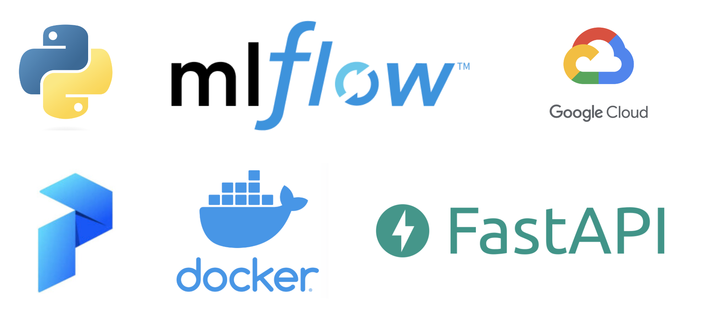

Deploying a prediction model and automating it's lifecycle
In this project I brought a neural network predicting taxiprices into production through training and storing it via the cloud, automating and monitoring it's lifecycle and making it accessible via API.

The goal of this project was to bring a previously constructed neural network predicting the price of a taxi fare into production. The project constituted of the following steps:
- Package the code - Bringing the code from a provided notebook into a python package that
can be ran via command
(e.g.python -m taxifare.interface.main_local). - Implement incremental processing and incremental learning - To circumvent memory and time constraints, I implemented chunk by chunk preprocessing and partial fitting of the model.
- Cloud training - Sourcing data from a warehouse using Google Bigquery and training, evaluating and using the model from a virtual machine using Google Compute Engine.
- Automate the model lifecycle - To ensure model reliability over time I used MLflow to store the trained models and monitor their performance over time in the cloud. Consequently, I implemented Prefect to automate a workflow that preprocesses new data, evaluates the performance of the current model on the new data and trains it on the new data to see how the perfoemance changes.
- Deployment - Lastly, I created a Dockerimage, pushed it to Google Cloud Run and built a
prediction API using FastAPI to enable the use of the model via API requests.
Example API request:
".../predict?pickup_datetime=2013-07-06%2017:18:00
&pickup_longitude=-73.950655
&pickup_latitude=40.783282
&dropoff_longitude=-73.984365
&dropoff_latitude=40.769802
&passenger_count=2"
Example response:
Incremental processing and training code excerpt:
MLflow and Prefect code excerpt:

FastAPI code excerpt: